Genesis - Como restaurar um
console
 :::. Por
Gigacom - Andando nas feirinhas da cidade, as vezes
descubro verdadeiras preciosidades esquecidas pelo tempo, debaixo de um
monte de mercadorias dentro daquelas bancas. Esse Genesis ha anos
não era usado, e por pura sorte foi encontrado antes de ir
para o lixo.
:::. Por
Gigacom - Andando nas feirinhas da cidade, as vezes
descubro verdadeiras preciosidades esquecidas pelo tempo, debaixo de um
monte de mercadorias dentro daquelas bancas. Esse Genesis ha anos
não era usado, e por pura sorte foi encontrado antes de ir
para o lixo.
_________________________________________________________________________________
Olha só que
curioso... sempre procurei um Genesis por aqui para comprar, mas nunca
achei um .
Num belo dia de sábado, tô lá eu dentro
da feira esperando uma baita chuva passar para eu ir embora. Como
estava comprando algumas coisas numa banquinha que vende video games,
bati um papo com o vendedor para passar o tempo. Conversa vai, conversa
vem, e ele me fala sobre alguns video games que tem guardado na banca,
mas que não deixa esposto simplesmente porque ninguem se
interessava neles. Bem... ele me mostrou um Dinavision desses novos, um
Mega Drive 3 com o Show do Milhão na memória,
alguns Super Nintendos pintados por canetinhas hidrocolor...
Daí ele me fala: tem mais um aqui que nem sei onde
tá mais, mas é um Mega Drive acho... insisto um
pouquinho, e o carinha procura um pouco mais. Derrepente, lá
no chão, debaixo de uma pilha de caixinhas de outros
produtos, ele puxa ninguem mais, ninguem menos, um autêntico
Genesis!!! Mas a alegria durou pouquissimo... O coitado do video game
tava com uma camada de tinta branca em cima dele. O cara disse que
quando pintaram a banca, a anta do pintor espirrou tinta em todas as
mercadorias, inclusive o Genesis. Felizmente era uma camada fina de
tina, que saia facil com Veja. Fiz alguns testes, vi que a tinta tava
saindo mais ou menos facil, e resolvi levar o pobre Genesis para casa.
.
Num belo dia de sábado, tô lá eu dentro
da feira esperando uma baita chuva passar para eu ir embora. Como
estava comprando algumas coisas numa banquinha que vende video games,
bati um papo com o vendedor para passar o tempo. Conversa vai, conversa
vem, e ele me fala sobre alguns video games que tem guardado na banca,
mas que não deixa esposto simplesmente porque ninguem se
interessava neles. Bem... ele me mostrou um Dinavision desses novos, um
Mega Drive 3 com o Show do Milhão na memória,
alguns Super Nintendos pintados por canetinhas hidrocolor...
Daí ele me fala: tem mais um aqui que nem sei onde
tá mais, mas é um Mega Drive acho... insisto um
pouquinho, e o carinha procura um pouco mais. Derrepente, lá
no chão, debaixo de uma pilha de caixinhas de outros
produtos, ele puxa ninguem mais, ninguem menos, um autêntico
Genesis!!! Mas a alegria durou pouquissimo... O coitado do video game
tava com uma camada de tinta branca em cima dele. O cara disse que
quando pintaram a banca, a anta do pintor espirrou tinta em todas as
mercadorias, inclusive o Genesis. Felizmente era uma camada fina de
tina, que saia facil com Veja. Fiz alguns testes, vi que a tinta tava
saindo mais ou menos facil, e resolvi levar o pobre Genesis para casa.
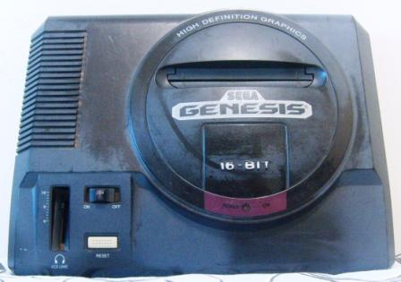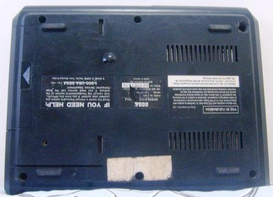
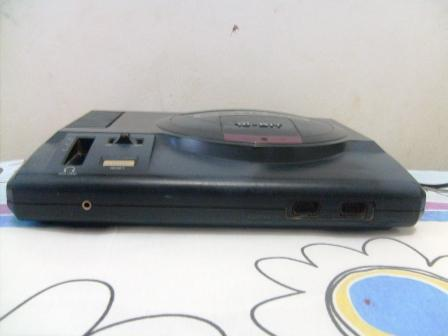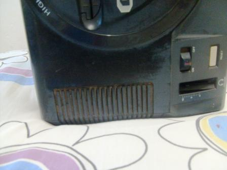
E aê? Quanto você pagaria por esse video game?
A coisa tava bem feia ... A
tinta tava impregnada em toda parte. Tinha muita poeira na entrada dos
joysticks, o botão que regula o som tinha sumido, não
liguei o console logo de cara na fonte para não correr o risco
de ter alguma coisa na placa provocando um curto e assim queimar tudo.
Já rezando e me preparando para a árdua tarefa, fui
desmontando o console com a calma peculiar de sempre.
... A
tinta tava impregnada em toda parte. Tinha muita poeira na entrada dos
joysticks, o botão que regula o som tinha sumido, não
liguei o console logo de cara na fonte para não correr o risco
de ter alguma coisa na placa provocando um curto e assim queimar tudo.
Já rezando e me preparando para a árdua tarefa, fui
desmontando o console com a calma peculiar de sempre.
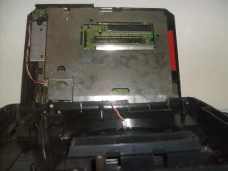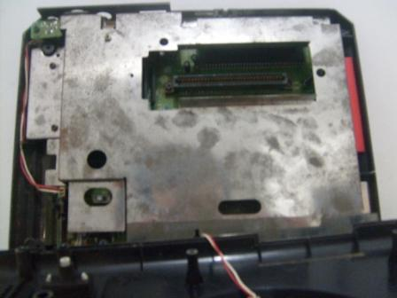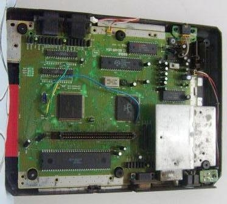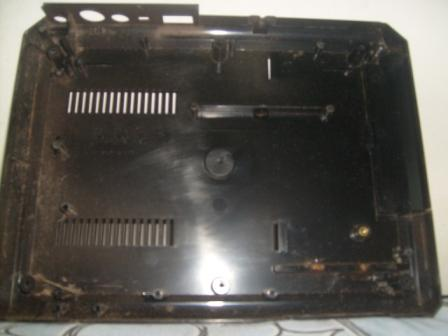
A chapa metálica que envolve a placa estava oxidada como de costume ,
na placa mãe havia alguma sujeira bem em cima das perninhas
daqueles chips quadrados ao centro, a parte de baixa do plástico
tava super empoeirada
,
na placa mãe havia alguma sujeira bem em cima das perninhas
daqueles chips quadrados ao centro, a parte de baixa do plástico
tava super empoeirada ,
no slot de cartucho tinha bastante sujeira tambem... mas de
resto, a aparência da placa mãe estava muito boa.
,
no slot de cartucho tinha bastante sujeira tambem... mas de
resto, a aparência da placa mãe estava muito boa.
Tudo desmontado, o primeiro passo era tirar aquela tinta de cima do video game. Já tinha uma idéia do que iria fazer. Tintas geralmente são soluvéis em água, se você pega algo pintado e coloca dentro de um balde e deixa por lá por um tempo, logo a tinta umedece e começa a soltar da superficie do objeto. Isso funcionaria de certa forma nesse video game, porém como a tinta estava lá ha muitos anos, e tambem por ser beeeeeeeem fina, pra tirar aquilo seria preciso esfregar bastante com uma esponja até sair tudo. Então enchi uma pia com água e sabão, mergulhei o Genesis e comecei a esfregar o plastico com a parta macia da esponja em todas as partes onde estava pintado. Detalhe que na parte debaixo, havia restos de um adesivo colado na carcaça. Para tirar isso é só deixar o plastico mergulhado na água por um bom tempo, o adesivo sai com facilidade depois disso.
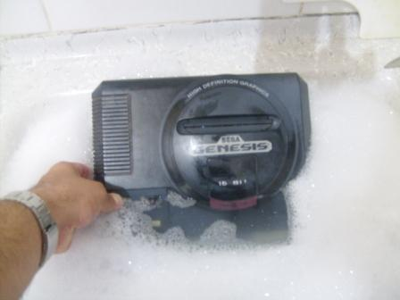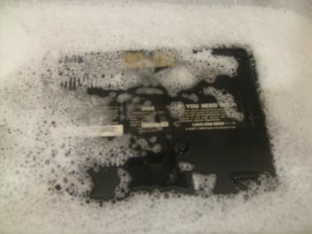
Esfreguei, esfreguei, esfreguei... e quando meu braço deu cãibra, deixei o plastico mergulhado de molho, e fui limpar a placa mãe do Genesis. A limpeza de um circuito eletrônico costuma ser mole, passa-se um pincel em cima da placa para varrer a poeira que está mais solta, e depois, com um pouco de alcool, esfrega-se um pincel com cerdas um pouco rigidas para tirar a sujeira impregnada. Veja abaixo um antes e depois:
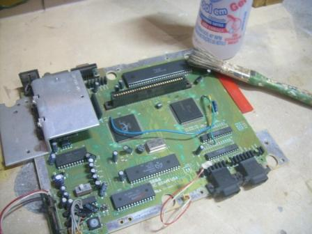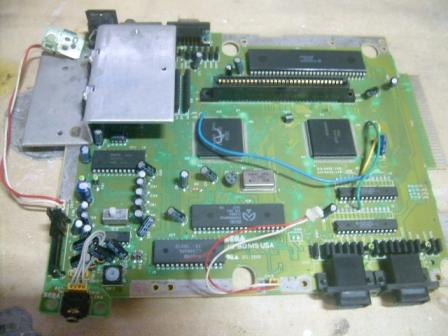
Ok,
ok... não dá pra perceber bem a sujeira na primeira
foto... é que o fotografo aqui não é muito bom
para tirar imagens com detalhes (malditas sejam essas cameras da Samsung  ).
Mas acredite, depois da limpeza a plaquinha ficou perfeita!!! Limpa que
nem bumbum de bebê depois de um banho na banheirinha
).
Mas acredite, depois da limpeza a plaquinha ficou perfeita!!! Limpa que
nem bumbum de bebê depois de um banho na banheirinha .
.
Voltei até a parte plastica do console, esfreguei mais um pouquinho, tirei algumas manchas mais escondidas, enxaguei, sequei e juntei as peças todas para a montagem do video game.
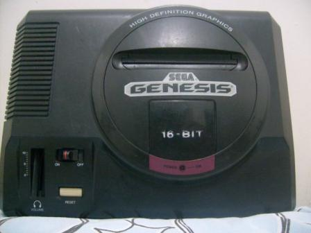
Acontece que o plastico preto do Genesis tava meio esbranquiçado... é normal ver esse efeito depois de uma lavagem em video games como o Mega Drive, ele perde o brilho facil e não fica tão bonito quanto era antes. Mas o tio Giga tem uma técnica no minimo inovadora para resolver esse tipo de problema. Essa técnica miraculosa funciona muito bem em video games cujo plastico da carcaça é liso, não possuindo aqueles poros que aparecem nos consoles da Nintendo por exemplo. O segredo é usar cera de carro, dessas comuns mesmo que a gente compra no mercado, porém é preciso prestar atenção em alguns requisitos:
1º A cera não pode conter silicone. Se tiver, vai melecar o console e deixar tudo uma verdadeira porcaria.
2º A cera, de preferência, deve ser daquelas que se pode passar em todo tipo de pintura.
Daí não tem mistério, só pegar um paninho, umedecer com um pouco de água, pegar um pouco de cera e passar por cima de todo o console.
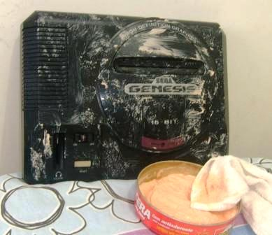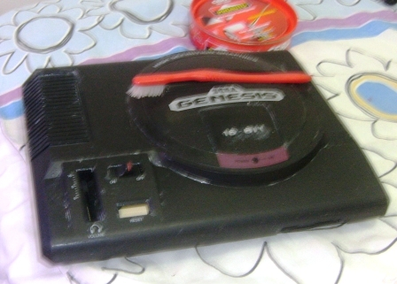
Na primeira foto, pode parecer que há muita cera, mas depois que se espalha bem a cera fica como na foto segunda foto. Notar que usei a escovinha par tirar o exesso de cera que entrou naquela peça de plastico mais brilhante e redonda. Depois de espalhar bem a cera, só esperar uns minutinhos até ela secar e bem e dar aquele lustre. Olha o resultado:
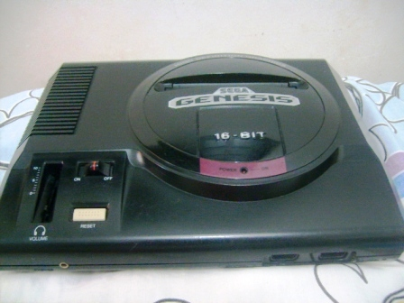
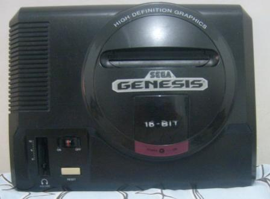
Pretinho e brilhante como antes .
O legal de se passar cera é que ela forma uma pelicula bem
fininha em cima do console, protegendo ele da poeira e cobrindo
arranhões superificiais. O brilho volta mesmo a aparecer,
ficando com um aspecto de coisa nova e bem conservada.
.
O legal de se passar cera é que ela forma uma pelicula bem
fininha em cima do console, protegendo ele da poeira e cobrindo
arranhões superificiais. O brilho volta mesmo a aparecer,
ficando com um aspecto de coisa nova e bem conservada.
Com tudo montado e bem bonito, chega a hora do teste. Obvio que não adiantaria muito ter todo esse trabalho para simplesmente deixar o Genesis estacionado na estante sem uso. O coração dele, o MC68000 tinha que trabalhar novamente. Pego um cartucho meio que aleatoriamente, coloco no console, espeto os cabos, fonte, controle e...
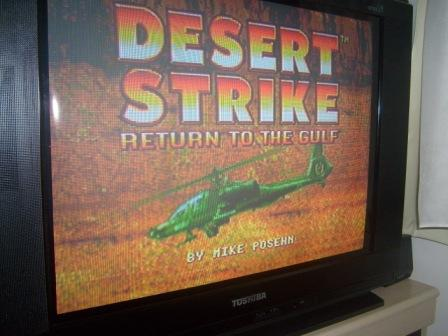
Prontinho! Mais um Genesis de volta a vida !
Pena que ficou faltando aquele botão que regula o som dos fones
de ouvido... qualquer dia desses encontro um por aí dando sopa e
coloco nesse aqui.
!
Pena que ficou faltando aquele botão que regula o som dos fones
de ouvido... qualquer dia desses encontro um por aí dando sopa e
coloco nesse aqui.
Bem,
chegamos ao fim de mais uma restauração. Duvidas,
sugestões, declarações de amor... já sabem,
só acessar o Trombone.
Acesse o Trombone e comente sobre essa matéria!


Aqui, vou apresentar a restauração de um controle de SNES que comprei em péssimo estado numa feirinha da minha cidade, e que agora está lindinho funcionando perfeitamente. Confira as dicas, e faça uma restauração você também
Restaurando um controle de PSX
Peguei o mais feinho e judiado dos controles para fazer esse artigo. O coitado estava encardido na parte de cima, e debaixo dele encontrei arranhões nas partes de apoio da mão, e bastante sujeira acumulada nas inscrições. O conector do cabo estava muito arranhado e sujo tambem, o cabo então nem se fala... sujava a mão só de pegar